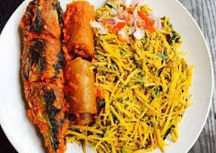

Why Local Dishes?
Having started from Nigeria, we believe that culture should be observed always no matter the tribe. That is why our main mission is to spread love through Food. This and this has always been our mission since 1990. We will continue to serve you any dish of your choice.
Traditional, Tasty & Delicious
Having from the range of pounded yam, amala "iyan""flour" for the yorubas, we also have varities of ibo food ranging from onugbu soup, down to nsala. Not to be left out the tuwo chikafa for the hausa, the starch for the Delta, irhobo tribe. We believe we can spread love and bring people together through food. Try Us Today.
Read more.jpg)